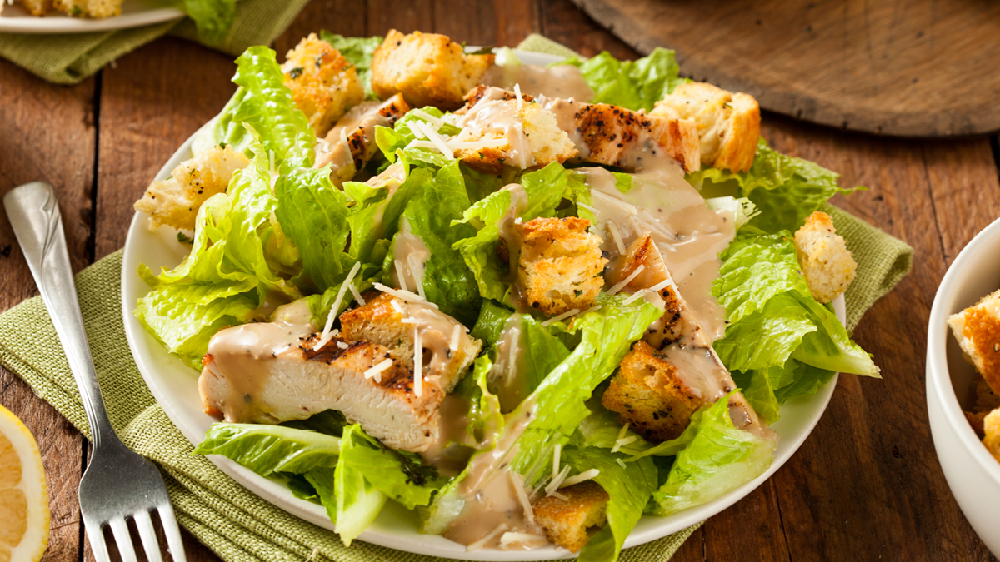

Salat-Gericht

Zutaten:
| Eisbergsalat | 450 g |
| Hähnchenbrust | 150 g |
| Kräutersoße | 85 ml |
| Käse | 5 g |
Zubereitung:
1.Schritt: Hähnchenbrust anraten, würzen und klein schneiden
2.Schritt: Salat schneiden
3.Schritt: Hähnchen, Salad und Käse in eine Schüssel geben mit Soße übergießen und genießen